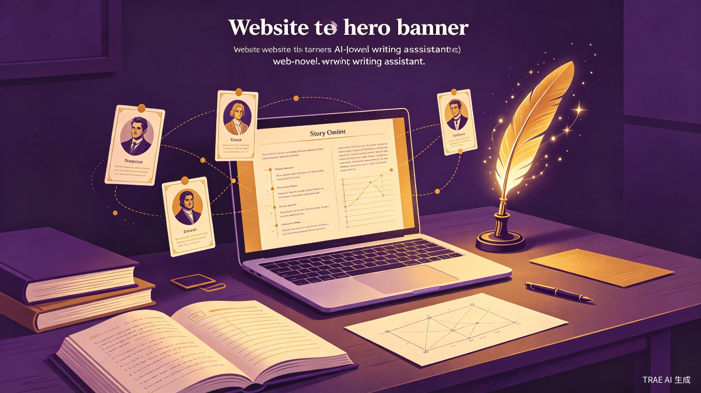

笔神爽文助手（NovelForge AI） — 网络爽文小说 AI 写作助手。
中国有超过 2000 万网络文学创作者，其中超过 80% 的新人作者因卡文、节奏把控差、爽点设计不到位而无法坚持日更，最终弃坑。即便是签约作者，也常常面临"开头猛如虎，中期崩成狗"的困境——前 10 万字精心打磨，越往后越水，订阅量断崖式下跌。市面上的通用 AI 写作工具（如 ChatGPT、文心一言）写出来的小说套路化严重、人物扁平、缺乏爽感，根本无法满足网络爽文的专业创作需求。
我本人就是一名起点中文网的签约作者，写过 3 本小说，总字数超过 300 万。我太懂那种对着空白文档发呆两小时写不出一个字的痛苦了。我也试过用各种 AI 工具来辅助写作，但要么写出来的东西像白开水一样没味道，要么人物行为逻辑崩坏，要么节奏拖沓完全不符合爽文的"黄金三章"法则。我深刻地意识到：通用大模型 ≠ 专业写作助手。爽文创作有其独特的结构规律和读者心理，需要专门的 AI 产品来解决。于是，笔神爽文助手的想法就诞生了。
一款基于大语言模型的 Web 端 SaaS 产品（网站应用），专为网络爽文作家设计，提供从创意构思、大纲生成、角色设定、爽点铺陈、章节续写、智能润色到发布管理的全流程 AI 辅助写作能力。
刚入行的网络小说新人，有创作热情但缺乏写作技巧和经验，经常卡文、节奏把控不好，需要专业指导和辅助工具。
在起点、番茄、飞卢等平台签约的职业作者，需要保持日更 6000-10000 字的更新频率，面临巨大的写作压力。
同时运营多个账号、写多部作品的工作室或个人，需要批量产出内容，对写作效率要求极高。
有自己的故事想写但没时间或没能力写完整本书的网文爱好者，希望借助 AI 实现自己的写作梦想。
| 痛点编号 | 痛点描述 | 影响程度 | 现有解决方案的不足 |
|---|---|---|---|
| P1 | 卡文严重，写不下去 | 致命 | 通用 AI 写出来的内容套路化、没灵魂，无法直接使用 |
| P2 | 日更压力大，时间不够用 | 致命 | 纯手动写作效率太低，每天 4-6 小时才能写完日更量 |
| P3 | 爽点设计不到位，读者不买账 | 严重 | 全靠作者个人经验摸索，缺乏系统性的爽点设计方法论 |
| P4 | 人物容易 OOC，前后不一致 | 严重 | 全靠作者记忆和笔记管理，长篇小说中几乎不可避免 |
| P5 | 大纲崩了，中后期剧情失控 | 严重 | 手动维护大纲太麻烦，写着写着就偏离轨道 |
| P6 | 新人不知道从何开始 | 中等 | 网上教程零散不成体系，试错成本高 |
输入题材（玄幻/都市/仙侠/科幻等）、核心金手指设定、主角人设，AI 一键生成包含 100 章详细规划的完整大纲。每章包含：章节标题、核心剧情、爽点类型、出场人物、剧情推进度。支持一键调整大纲走向、增减章节、修改节奏。
深度的角色档案管理：外貌、性格、背景、能力体系、口头禅、行为习惯、人物弧光规划。AI 实时检测角色言行是否符合人设（OOC 检测），发现偏差立即提醒。支持多角色关系图谱可视化，复杂人物关系一目了然。
内置 20+ 种经典爽文套路模板（打脸、升级、逆袭、装逼、收小弟、扮猪吃虎等），AI 自动分析当前章节的爽点密度，给出优化建议。一键"爽点增强"：将平淡章节重写为高潮迭起的爽文节奏，确保每章至少 3 个爽点。
基于已有 20 章上下文，AI 自动生成下一章内容，保持文风、人设、剧情的一致性。支持多种写作风格切换（热血/搞笑/深沉/文艺）。生成的内容可直接编辑、分段重写、局部润色，真正做到"AI 打草稿，人来点睛"。
系统化的世界观设定管理：力量体系、地理地图、势力分布、历史背景、种族设定、宝物图鉴。AI 自动检测设定矛盾（如等级体系前后不一致）。支持一键生成世界观百科，方便读者查阅，也方便作者自己检索。
专门针对网文开头前三章的 AI 优化工具。基于全网爆款小说的数据分析，自动检测开头是否符合"黄金三章"法则：第一章抓眼球、第二章立人设、第三章抛钩子。给出具体的修改建议，大幅提升签约率。
卡文时使用"剧情推演"功能，AI 自动生成 3 种不同的剧情走向方案，每种方案包含：剧情概要、后续 5 章发展预测、对主线的影响、爽点分布。作者选择最喜欢的方向，AI 自动更新大纲并继续推进。
写完章节后，一键发布到起点、番茄、飞卢、晋江等多个平台。自动适配各平台的排版格式和字数要求。内置发布时间管理、存稿箱、定时发布功能，让作者专注写作，发布琐事交给 AI。
| 技术层 | 选型方案 | 选型理由 |
|---|---|---|
| 前端框架 | React 18 + TypeScript | 组件化开发效率高，类型安全，适合复杂编辑器界面 |
| 编辑器内核 | 基于 ProseMirror 自研 | 高性能富文本编辑，支持 AI 建议实时插入、段落级重写 |
| 后端框架 | Node.js + NestJS | 与前端共享 TypeScript 生态，异步 I/O 性能优异 |
| 大语言模型 | GPT-4 / Claude 3 + 自研微调模型 | 通用能力用顶级大模型，爽文专属任务用微调后的专用模型 |
| 向量数据库 | Pinecone / Milvus | 存储小说全量内容，实现长程记忆和上下文检索增强生成（RAG） |
| 数据库 | PostgreSQL + Redis | 关系型数据存 PostgreSQL，缓存和会话存 Redis |
| 部署 | AWS / 阿里云 + Docker + K8s | 容器化部署，弹性伸缩，应对写作高峰期流量 |
爽文专用微调模型：这是笔神爽文助手最核心的技术壁垒。我们收集了过去 5 年各大平台 top 1% 的爆款爽文数据（经过授权和清洗），对开源大模型进行领域专用微调（Domain Fine-tuning），让 AI 真正"懂"爽文的节奏、套路和读者心理。通用大模型写爽文是"业余水平"，我们的模型是"职业水平"。
完成核心写作编辑器、章节续写、角色管理、大纲生成四大基础功能。接入 GPT-4 API，完成 100 名种子用户内测验证。目标：验证产品价值，收集用户反馈。
完成爆款爽文数据集清洗和标注，基于 LLaMA 3 进行领域微调，训练出第一代爽文专用模型。上线爽点增强引擎、黄金三章优化器、OOC 检测三大核心功能。目标：建立技术壁垒，拉开与通用 AI 的差距。
完善世界观设定库、剧情推演、多平台发布等功能。上线付费订阅系统（基础版 ¥29/月、专业版 ¥99/月、团队版 ¥299/月）。启动市场推广，目标：付费用户达到 5000 人。
上线作者社区、作品交易、IP 衍生等生态功能。探索 AI 有声书、AI 漫画改编等增值服务。目标：成为网文创作领域的基础设施平台。
| 对比维度 | 笔神爽文助手（本项目） | ChatGPT / 文心一言 | 墨者写作 / 橙瓜码字 | 彩云小梦 |
|---|---|---|---|---|
| 定位 | 爽文专用 AI 写作助手 | 通用对话 AI | 纯写作工具（无 AI） | AI 续写（泛用） |
| 爽文适配度 | 深度定制，专用模型 | 通用水平，套路化 | 不适用 | 浅度适配 |
| 大纲系统 | 智能大纲生成与管理 | 需手动引导 | 纯手动 | 无 |
| 角色一致性 | OOC 实时检测 + 纠正 | 容易崩人设 | 纯靠作者 | 基本无 |
| 爽点设计 | 20+ 套路模板 + 智能增强 | 套路化严重 | 不适用 | 无 |
| 世界观管理 | 系统化设定库 + 矛盾检测 | 需手动维护 | 基础笔记 | 无 |
| 价格 | ¥29-99/月 | ¥20-150/月（需会用） | 免费 / ¥15/月 | 免费 + 内购 |
| 上手难度 | 低，开箱即用 | 高，需要会写 Prompt | 低 | 中 |
核心竞争优势：笔神爽文助手是市面上唯一一款真正为爽文作者深度定制的 AI 写作工具。通用 AI 写爽文就像用通用螺丝刀开红酒——能用但不好用。我们从底层模型到上层功能全链路针对爽文创作优化，提供的不只是"AI 帮你写字"，而是"AI 帮你写好爽文"——从大纲结构、爽点节奏、人物塑造到世界观设定，全方位专业赋能。
中国网络文学创作者超过 2000 万人，其中付费意愿强的职业/半职业作者超过 200 万人。按专业版 ¥99/月计算，目标客群年 ARPU 超 1000 元，市场规模超过 20 亿元。
写作是一个持续产出的过程，作者一旦习惯了 AI 辅助写作就很难回到纯手动模式。预计月续费率超过 80%，LTV/CAC 比值远超普通 SaaS 产品。
基础订阅 + 高级功能内购 + 团队版 + 企业版（与网文平台合作）+ IP 衍生服务，形成多层级收入结构，抗风险能力强。
用户越多，写作数据越多，模型微调效果越好，产品体验越优，又能吸引更多用户。形成正向数据飞轮，护城河越来越深。
让每个人都能讲述自己的故事：写作是人类最古老的表达形式之一，但长期以来，写作被认为是"有天赋的人"才能做的事。笔神爽文助手的使命是——让每一个有故事想讲的人，都能把它写出来。无论你是上班族、学生、还是退休老人，只要你心中有一个故事，AI 就能帮你把它变成一部完整的小说。这不仅是一个写作工具，更是一次创作民主化的革命——它降低了内容创作的门槛，让更多人的声音有机会被听见，让更多好故事有机会被看见。
笔神爽文助手是一款专为网络爽文作家打造的 AI 写作助手。它不是又一个通用 AI 聊天机器人，而是从底层模型到上层功能全链路针对爽文创作优化的专业工具——智能大纲生成、角色人设管理、爽点铺陈引擎、章节智能续写、世界观设定库、黄金三章优化、剧情推演分支、多平台一键发布，八大核心功能覆盖写作全流程。
这个项目的核心价值在于：让 AI 真正懂爽文，让作者真正解放生产力。通用大模型写出来的东西是"正确但无聊"的，而笔神爽文助手写出来的内容是"有节奏、有爽点、有人物"的。我们的目标不是取代作者，而是成为作者的"神笔"——让创意的火花不被繁琐的打字工作熄灭，让故事的光芒不被卡文的阴霾遮挡。
我们坚信，每一个有故事的人都值得被听见。笔神爽文助手，就是让这件事变得简单、高效、充满乐趣的那支神笔。